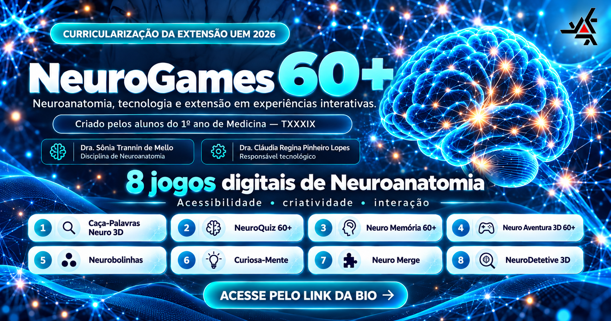

8 jogos digitais de Neuroanatomia
Acessibilidade, criatividade e interação. Toque em um cartão para abrir o jogo.
Caça-Palavras Neuro 3D — Expedição Neuro 60+
Encontre termos de Neuroanatomia e avance por fases com dicas, sons e recompensas.
ABRIR JOGO ↗ 2NeuroQuiz 60+
Quiz de Neuroanatomia com letras grandes, áudio, pausa e ritmo sem cronômetro.
ABRIR JOGO ↗ 3Neuro Memória 60+
Memória e associação com recursos de acessibilidade e redução de movimento.
ABRIR JOGO ↗ 4Neuro Aventura 3D 60+
Aventura de palavras sobre o sistema nervoso com leitura em voz alta, contraste e Libras.
ABRIR JOGO ↗ 5Neurobolinhas — Treino Cognitivo
Combine regiões cerebrais com pausa, velocidade reduzida e controles alternativos.
ABRIR JOGO ↗ 6Curiosa-Mente — NeuroQuiz 60+
Quiz acessível sobre o cérebro, com áudio, fonte ajustável, contraste e modo offline.
ABRIR JOGO ↗ 7Neuro Merge
Jogo de fusão inspirado na mecânica de frutas, adaptado à Neuroanatomia.
ABRIR JOGO ↗ 8NeuroDetetive 3D — O Arquivo Neural
Investigação forense com evidências e desafios de Neuroanatomia.
ABRIR JOGO ↗Disciplina de NeuroanatomiaDra. Sônia Trannin de Mello
Responsável tecnológicoDra. Cláudia Regina Pinheiro Lopes
Criado pelos alunos do 1º ano de Medicina — TXXXIX